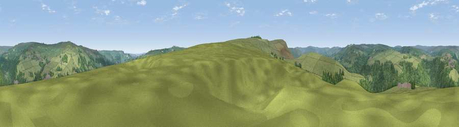

Viewpoint near Hebden Bridge
#22606 in England · top 44% of its area beats it · near Hebden BridgeWhere it is
The exact computed spot (SD 98975 26075). Click the marker for map links.
The view, rendered

A 360° render of this exact spot computed from the terrain model, tree cover and land cover — summer colours, afternoon light, calibrated against photographs of famous viewpoints. Real trees, hedges and buildings will differ in detail.
The panorama
Grey silhouette: terrain skyline in each direction (720 bearings, Earth curvature and refraction included). Dashed green: skyline with trees (+15 m) and buildings (+8 m) as obstacles. Blue strip: how far the ground is visible on each bearing.
Where the view opens
Wedge length = distance to the farthest visible ground on that bearing (vegetation-aware). Rings at 10, 25 and 50 km.
What fills the view
66% grassland · 31% woodland · 4% built-up
Angular shares of the visible panorama (visual magnitude), not map area. Landscape diversity 0.33 (0–1 Shannon).
Key numbers
More beautiful places nearby
The staircase of upgrades: each row has a higher view potential than everything closer. Driving times are estimates from straight-line distance, calibrated against real road routing — check an actual route before setting out.
| Place | Direction | Drive | Score |
|---|---|---|---|
| Viewpoint near Cragg Vale | SW · 2 km | ~6 min | 58.5 |
| Viewpoint near Chiserley | NE · 3 km | ~6 min | 60.5 |
| Viewpoint near Chiserley | NE · 3 km | ~7 min | 63.9 |
| Viewpoint near Shawforth | WSW · 9 km | ~18 min | 66.1 |
| Viewpoint near Stump Cross | E · 10 km | ~19 min | 71.5 |
| Viewpoint near Shaw | S · 18 km | ~31 min | 72.9 |
| Viewpoint near Edenfield | WSW · 18 km | ~31 min | 77.5 |
| Darwen Hill | W · 31 km | ~49 min | 80.7 |
53.73107, -2.01701 · source: screening · position refined by local search. Computed location — check access rights before visiting.